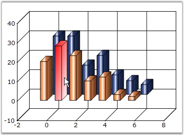

The auto highlight color for any series can be changed by setting the color at the HighlightInterior property of ChartStyleInfo class.
|
Details | |
|
Possible Values |
RBG values ranges from 0 to 255 |
|
Default Value |
None |
|
2D / 3D Limitations |
No |
|
Applies to Chart Element |
All series |
|
Applies to Chart Types |
Bar Charts, Pie, Funnel, Pyramid,Bubble, Column, Area, Stacking Area, Stacking Area100, Line Charts, Box and Whisker, Gantt Chart , Tornado Chart, Polar And Radar Chart, Hi Lo Chart, Hi Lo Open Close Chart |
Here is some sample code.
Series Wide Setting
|
[C#]
this.chartControl1.AutoHighlight = true; ChartSeries series1 = this.chartControl1.Series[0]; series1.Style.HighlightInterior = new BrushInfo(GradientStyle.ForwardDiagonal, Color.Red, Color.White); |
|
[VB.NET]
Me.chartControl1.AutoHighlight = True Dim series1 As ChartSeries = Me.chartControl1.Series(0) series1.Style.HighlightInterior = New BrushInfo(GradientStyle.ForwardDiagonal, Color.Red, Color.White) |

Figure 148: Column Chart with HighlightInterior
Specific Data Point Setting
To set interior color for individual highlighted datapoints,
|
[C#]
series1.Styles[0].HighlightInterior = new BrushInfo(GradientStyle.ForwardDiagonal, Color.Red, Color.White); series1.Styles[1].HighlightInterior = new BrushInfo(GradientStyle.ForwardDiagonal, Color.Green, Color.White); series1.Styles[2].HighlightInterior = new BrushInfo(GradientStyle.ForwardDiagonal, Color.Yellow, Color.White); series1.Styles[3].HighlightInterior = new BrushInfo(GradientStyle.ForwardDiagonal, Color.Pink, Color.White); |
|
[VB.NET]
series1.Styles(0).HighlightInterior = New BrushInfo(GradientStyle.ForwardDiagonal, Color.Red, Color.White) series1.Styles(1).HighlightInterior = New BrushInfo(GradientStyle.ForwardDiagonal, Color.Green, Color.White) series1.Styles(2).HighlightInterior = New BrushInfo(GradientStyle.ForwardDiagonal, Color.Yellow, Color.White) series1.Styles(3).HighlightInterior = New BrushInfo(GradientStyle.ForwardDiagonal, Color.Pink, Color.White) |
See Also
Bar Charts, Pie Chart, Funnel Chart, Pyramid Chart, Bubble Chart, Column Chart, Area Chart, Stacking Area Chart, Stacking Area100 Chart, Line Charts, Box and Whisker Chart, Gantt Chart, Tornado Chart, Polar And Radar Chart, Hi Lo Chart, Hi Lo Open Close Chart